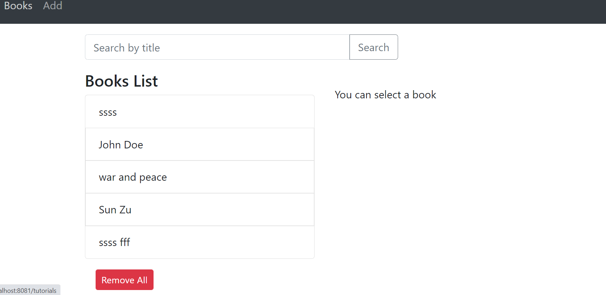
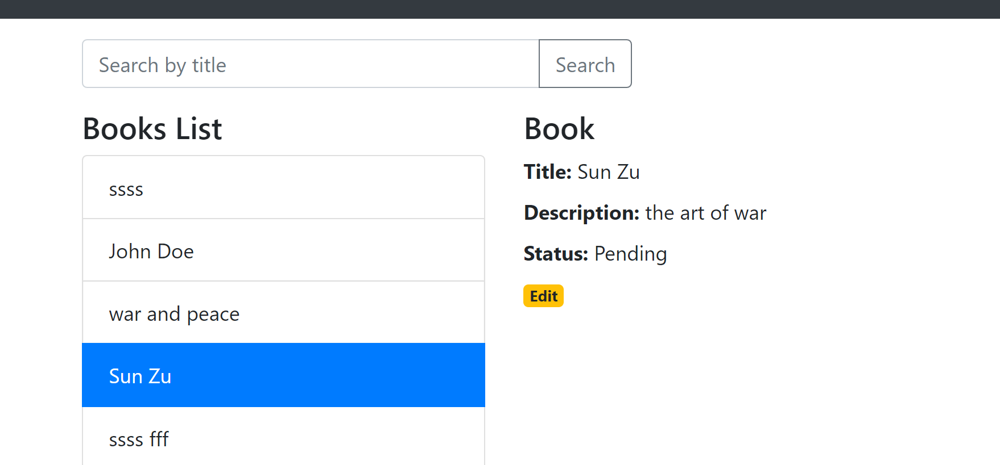
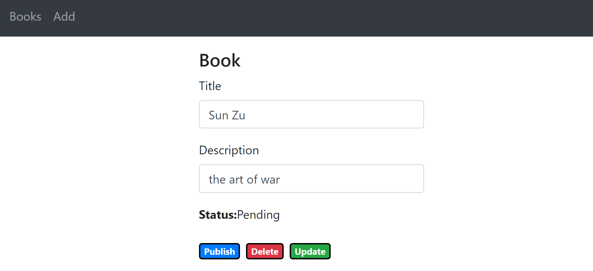

Use can select local or social media accounts to login

screenshot 2

screenshot 3
After succesful login, the use will see the welcome page

screenshot 4
Now let me show you interesting thing about secure web API
This peace of code will do the magic work for us
public void ConfigureServices(IServiceCollection services) {
services.AddAuthentication("Bearer") .AddIdentityServerAuthentication("Bearer", options =>
{
options.ApiName = "secretApi";
options.Authority = "https://localhost:44343";
});
services.AddAuthorization(options =>
{
options.AddPolicy("secretApiScope", policy => { policy.RequireAuthenticatedUser(); policy.RequireClaim("scope", "secretApi.read");
});
});
This code will allow only access token with right scope Claim to access web API
You can see the complete code for this demo application in my github repo link below
link
https://github.com/Nguyen105/dotnetdemo
The second demo project is about react frontend.
This react frontend let users select books list from database. Users can update book title, book description, and delete book from database.
Some screenshot will show you how the react frontend look like,
the nice thing about frontend react is that you can choose to connect to many different type database,
SQL server, PostgreSql, mySQL, etc ...

screenshot 5

screenshot 6

screenshot 7
And you can choose many different framework as backend, .Net or Java or Node.js, etc
You can see the code for this react frontend in my github repo link
link
https://github.com/Nguyen105/frontend-react
That is for now, i will publish more demo project soon when i have time
Until then, best regards
Software developer Quoc